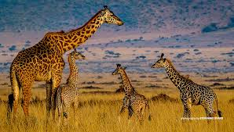

More About Giraffes
Giraffes have the same number of neck bones as humans—just seven—but each one is much longer. Their tongues can reach about 45–50 cm and are dark-colored to prevent sunburn. Baby giraffes can stand and walk within an hour of birth. Despite their size, they only sleep for a few minutes at a time throughout the day.
Giraffe Fun Facts

Giraffes, with their long legs, tall necks, and gentle nature, have fascinated people for ages. Their height helps them reach the tastiest leaves, but there’s much more to these African giants. They have strong hearts, sharp instincts, beautiful spotted coats, newborns that can stand almost right away, impressive running skills, and they can even enjoy a swim.
Giraffe Family
- More Giraffes
- Giraffe Lifestyle
- Masai Giraffe
- Northern Giraffe
- Reticulated Giraffe
- Southern Giraffe